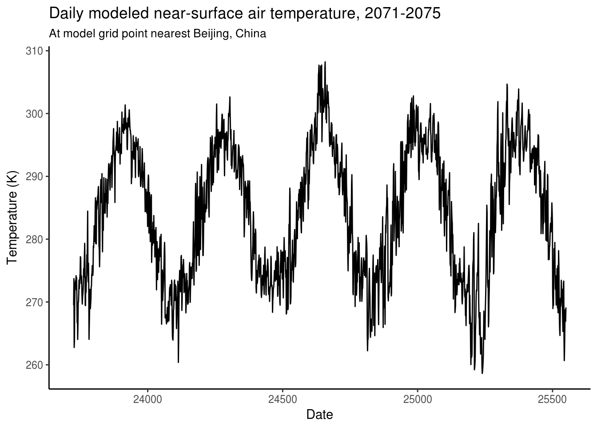
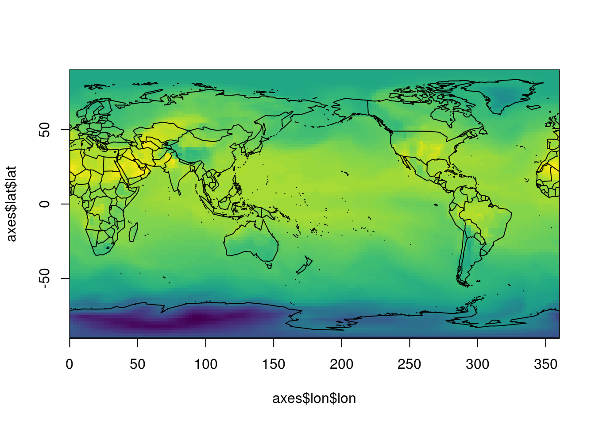
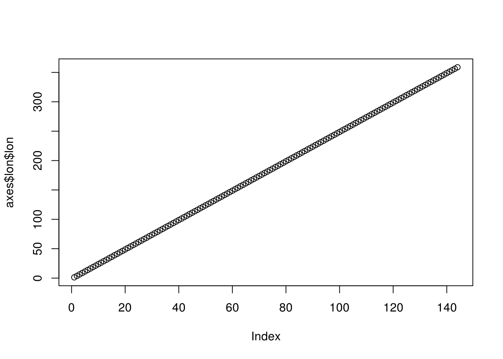
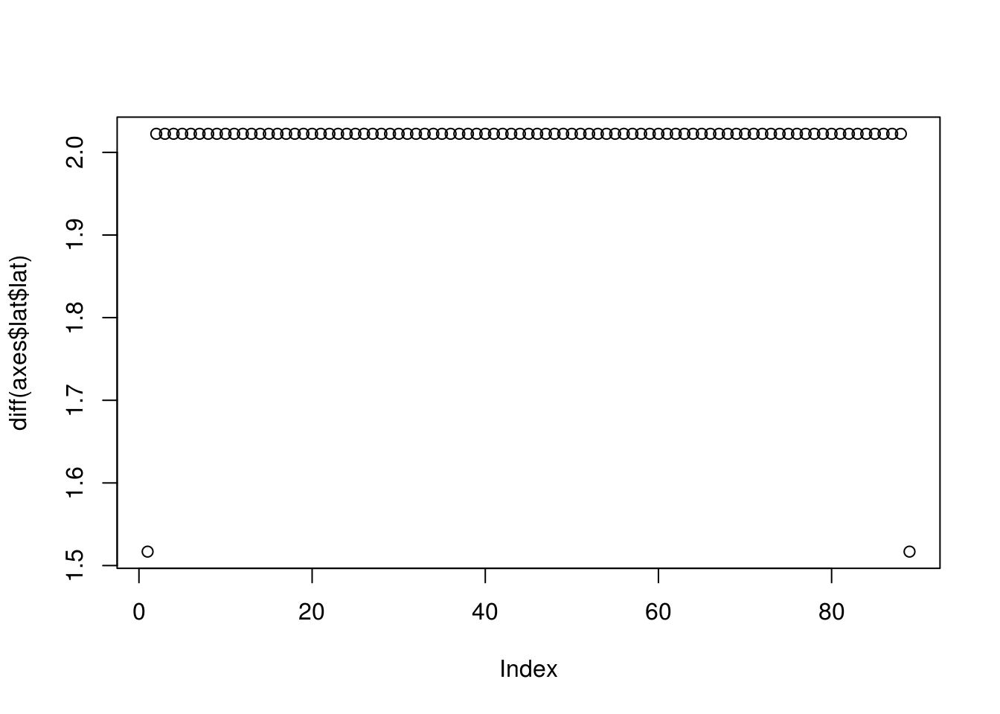
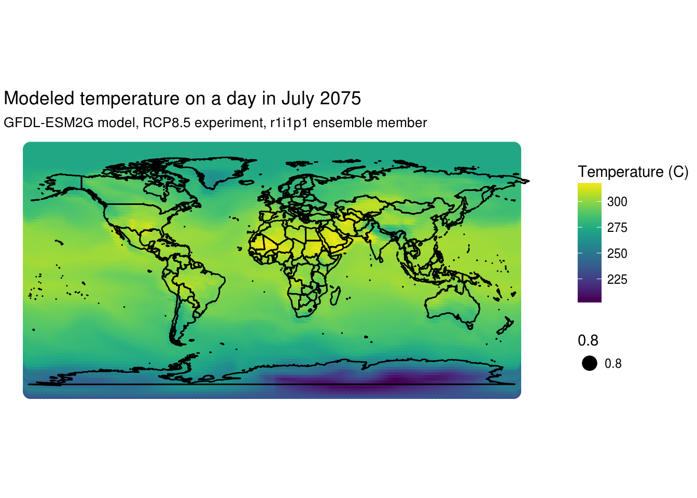

Following here:
https://cran.r-project.org/web/packages/futureheatwaves/vignettes/starting_from_netcdf.html
u <- "http://cses.washington.edu/rocinante/CMIP5/rcp85/GFDL-ESM2G/tas_day_GFDL-ESM2G_rcp85_r1i1p1_20710101-20751231.nc"
climate_filepath <- file.path("/tmp", basename(u))
if (!file.exists(climate_filepath)) {
download.file(u, climate_filepath, mode = "wb")
}Use tidync to we what is in the file, activate to choose the grid of choice and then we can proceed to extract the data.
library(tidync)
(tnc <- tidync(climate_filepath))##
## Data Source (1): tas_day_GFDL-ESM2G_rcp85_r1i1p1_20710101-20751231.nc ...
##
## Grids (9) <dimension family> : <associated variables>
##
## [1] D2,D1,D0 : tas **ACTIVE GRID** ( 23652000 values per variable)
## [2] D3,D0 : time_bnds
## [3] D3,D1 : lat_bnds
## [4] D3,D2 : lon_bnds
## [5] D0 : average_DT, average_T1, average_T2, time
## [6] D1 : lat
## [7] D2 : lon
## [8] D3 : bnds
## [9] S : height
##
## Dimensions (4):
##
## dimension id name length unlim coord_dim
## <chr> <dbl> <chr> <dbl> <lgl> <lgl>
## 1 D0 0 time 1825 TRUE TRUE
## 2 D1 1 lat 90 FALSE TRUE
## 3 D2 2 lon 144 FALSE TRUE
## 4 D3 3 bnds 2 FALSE TRUE## tnc %>% activate("D2,D1,D0")In this case the variable we want tas is in the already activated grid, so we don’t need to do anything more, but we could have harmlessly chose this grid as in the commented out code.
Now we can explore the axes that are relevant to this space. The axis transforms here are a data frame for each dimension with the index of the grid and possibly the coordinate values of the axis (some dimensions do not have coordinates).
axes <- tnc$transforms
## these won't be right because of noleap but tidync could do this too
axes$time$unit <- as.POSIXct("2006-01-01 00:00:00", tz = "GMT") + axes$time$time * 24 * 3600
nms <- names(axes)
purrr::map(nms, function(axis_name) summary(axes[[axis_name]][[axis_name]])) %>% setNames(nms)## $lon
## Min. 1st Qu. Median Mean 3rd Qu. Max.
## 1.25 90.62 180.00 180.00 269.38 358.75
##
## $lat
## Min. 1st Qu. Median Mean 3rd Qu. Max.
## -89.49 -45.00 0.00 0.00 45.00 89.49
##
## $time
## Min. 1st Qu. Median Mean 3rd Qu. Max.
## 23726 24182 24638 24638 25094 25550
##
## $bnds
## Min. 1st Qu. Median Mean 3rd Qu. Max.
## 1.00 1.25 1.50 1.50 1.75 2.00Hone in on a particular location and get all of the times.
tab <- tnc %>% hyper_filter(lon = index == which.min(abs(lon - 116.4)),
lat = index == which.min(abs(lat - 39.9))) %>%
hyper_tibble()
library(ggplot2)
ggplot(tab, aes(x = time, y = tas)) +
geom_line() +
xlab("Date") + ylab("Temperature (K)") +
ggtitle("Daily modeled near-surface air temperature, 2071-2075",
subtitle = "At model grid point nearest Beijing, China") +
theme_classic()
Hone in on a date to get the map.
tas <- tnc %>% hyper_filter(time = index == which(format(as.Date(axes$time$unit)) == "2075-07-15")) %>% hyper_slice()
image(axes$lon$lon, axes$lat$lat, tas[[1]], col = viridis::viridis(100))
maps::map("world2", add = TRUE)
plot(axes$lon$lon)
plot(diff(axes$lat$lat))
We can also get this in ggplot2 form, but this clearly shows that the grid is rectlinear and so ggplot2 can’t deal with it.
library(dplyr)##
## Attaching package: 'dplyr'## The following objects are masked from 'package:stats':
##
## filter, lag## The following objects are masked from 'package:base':
##
## intersect, setdiff, setequal, uniontas_tab <- tnc %>% hyper_filter(time = index == which(format(as.Date(axes$time$unit)) == "2075-07-15")) %>% hyper_tibble() %>% mutate(lon = ifelse(lon > 180, -(360 - lon), lon))
#ggplot(tas_tab, aes(lon, lat, fill = tas)) + geom_raster()
ggplot(tas_tab) + geom_point(aes(x = lon, y = lat, color = tas,
size = 0.8)) +
borders("world", colour="black", fill=NA) +
viridis::scale_color_viridis(name = "Temperature (C)") +
theme_void() +
coord_quickmap() +
ggtitle("Modeled temperature on a day in July 2075",
subtitle = "GFDL-ESM2G model, RCP8.5 experiment, r1i1p1 ensemble member") 